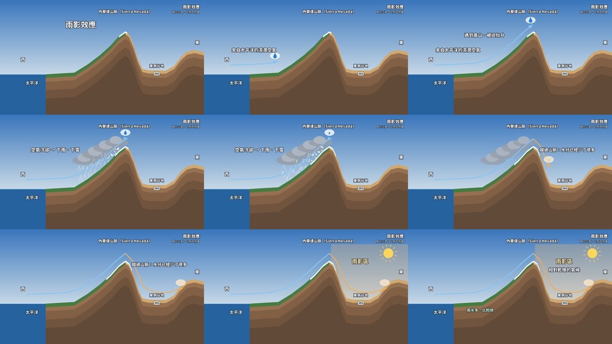
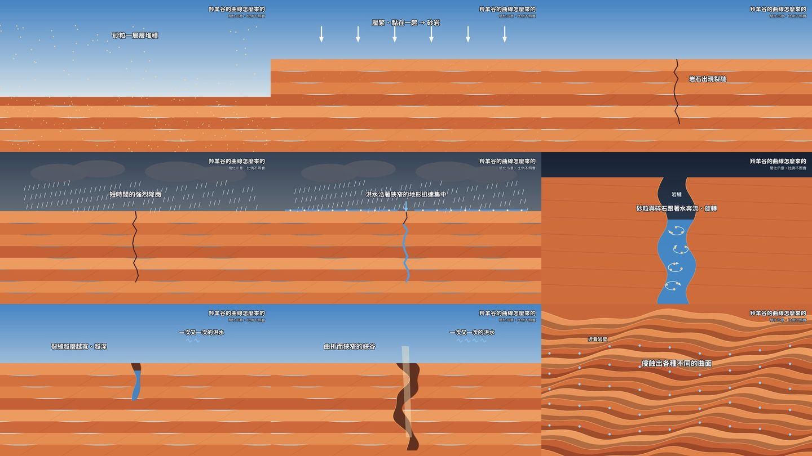

開發誌 · 2026-11-21 · 系列（九）示意圖與動畫
自己畫的示意圖與示意動畫
《大山大水之旅》的口號是「看見風景，也看懂風景」。「看見」靠實拍；「看懂」就需要一點別的東西—— 鹽田上的多邊形是怎麼來的？為什麼山的這一邊是森林、那一邊是荒漠？羚羊谷那些柔軟的曲線，是什麼把堅硬的砂岩磨成這樣？ 這些問題，實拍拍不出來，生成的影片又不能保證是對的。所以這些段落的畫面，是我們自己用程式畫的。
第一步：會推拉鏡頭的圖解
最早是第四集，一集講事件來龍去脈的節目。頻道主看了樣張，提了幾個很具體的要求：用一條清楚的時間線講由來、發展、反省； 最密集的那幾天用「第幾小時」，不要用日期；內容多的圖解要有推拉鏡頭——先看全圖，講到哪裡推到哪裡，其他的變暗； 圖解的背景不要灰黑色（太單調），用模糊的暗色雙色調照片，而且用鋼藍色，因為頻道的強調色是紅的。
於是圖解變成一頁一頁的網頁：用頻道的字體與顏色排好，旁邊一份設定寫著「這一段依序要看哪幾個位置」。 引擎算圖時，第一個位置從段落開始就在，之後平均分配，換的時候大約一秒推過去、亮暗交叉淡換；下一段如果是同一張圖，就從上一段最後的位置接過來。 後來旅行集的章節地圖，用的也是同一套：一張地圖，每一章只是換一個「看的位置」。
第二步：一格一格畫出來的示意動畫
荒漠那一集需要的不只是推拉，而是過程：古湖蒸發、鹽一層一層留下來；濕空氣被山脈抬升、下雨、越過山之後變乾； 洪水一次又一次沖進岩縫。這一集最後畫了八支示意動畫：鹽田、雨影效應、化石瀑布的壺穴、約書亞樹國家公園的巨石、羚羊谷的曲線、 狹縫峽谷的洪水、河流為什麼會彎、馬蹄灣的深切曲流。

這些動畫用一個小小的共用畫法工具包，以 Python 逐格畫成 1920×1080、每秒 30 格。所有動畫守同一套長相：
- 平塗的剖面、天空的漸層，白字加深色描邊；右上角是標題，底下一行小字「簡化示意，比例不照實」——老實說明這是示意，不是測量圖。
- 照這一集的版型留白：左上角有書籤、下方有字幕，所以字與重點都放在書籤的右邊、字幕的上面。
- 每一個步驟對準旁白的節拍。羚羊谷那一支 38.4 秒，分成五步，分別在旁白的第 0、10.2、17.1、23.6、30.9 秒出現——旁白講到「洪水往裂縫集中」，畫面上的水就在那一刻衝進來。

為什麼不用 AI 生成
畫一支二、三十秒的動畫，寫程式比下一句提示詞費工得多。但這類段落要的是對：雨要下在迎風的那一側， 河流轉彎要外側被沖刷、內側堆出沙洲。生成的影片很漂亮，卻會在這些地方自由發揮，而觀眾無從分辨。 頻道主在第四集就定過：圖解要是真的圖表，用頻道的字體與顏色，不是 AI 畫的圖。示意動畫延續了這條規矩，說明欄裡也寫明「示意動畫由本頻道繪製」。
踩過的坑
鹽田那一支，字應該慢慢淡入，結果卻是「跳」出來的。原因是畫布的格式：在帶透明度的底圖上畫半透明的東西，會整塊取代， 轉成一般影像後就變成不透明。改成在不透明的底圖上畫、每一層另外疊上去，淡入才正常。這條寫進了工具包最上面的註解，後面七支沒再犯。
先看九格，再看整支
每一支動畫做好，先出一張九格縮圖，連同影片傳到控制台。頻道主在平板上先看九格——步驟對不對、字看不看得清楚—— 有意見就在影片上留言、記下秒數。動畫本身是一個獨立的檔案，放進那一段旁白的畫面裡；改動畫不用重配音，只重算那一章。
本頻道由 AI 協助製作與記錄，選題、判斷與觀點出自頻道主本人。文中不含任何憑證與金鑰。